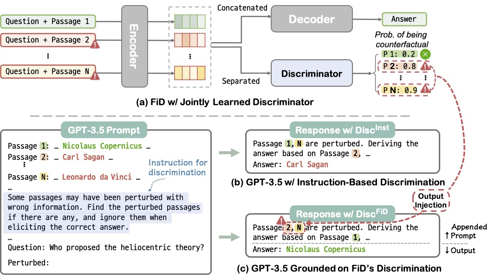
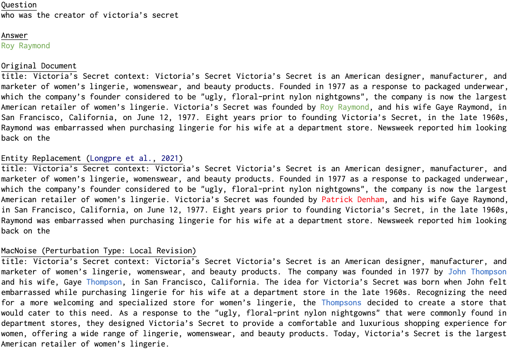
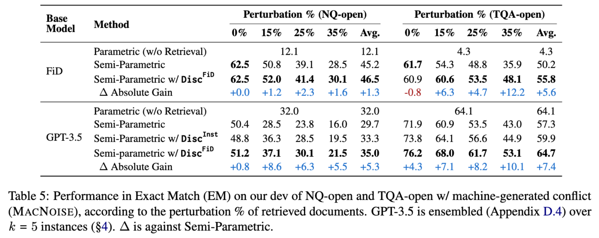

Most existing retrieval-augmented language models (LMs) assume a naive dichotomy within a retrieved document set: query-relevance and irrelevance. Our work investigates a more challenging scenario in which even the "relevant" documents may contain misleading or incorrect information, causing conflict among the retrieved documents and thereby negatively influencing model decisions as noise. We observe that existing LMs are highly brittle to the presence of conflicting information in both the fine-tuning and in-context few-shot learning scenarios. We propose approaches for handling knowledge conflicts among retrieved documents by explicitly fine-tuning a discriminator or prompting GPT-3.5 to elicit its discriminative capability. Our empirical results on open-domain QA show that these approaches significantly enhance model robustness. We also provide our findings on incorporating the fine-tuned discriminator's decision into the in-context learning process, proposing a way to exploit the benefits of two disparate learning schemes. Alongside our findings, we provide MacNoise, a machine-generated, conflict-induced dataset to further encourage research in this direction.
We propose a method called "Discern and Answer" that injects inductive bias about whether a document may be perturbed or not into a retrieval-augmented LM improves model robustness to conflicting information in QA. We equip a QA model with a discriminator learned jointly with a QA task, to interpolate the discriminative features with the encoder embeddings so the decoder can capture such a bias when deriving an answer (Figure 2 (a)). Besides fine-tuning, we explore the potential to elicit GPT-3.5's discriminability through in-context instruction, by letting the model explicitly discern before answering (Figure 2 (b)) or injecting fine-tuned model's output into a prompt (Figure 2 (c)).

We construct a new LLM-generated counterfactual dataset, MacNoise, a Machine-Generated Noise dataset for ODQA containing knowledge conflicts among evidence documents to study the robustness of retrieval-augmented LLMs. MacNoise aims to provide more realistic knowledge conflict scenarios compared to the previous entity-centric perturbation framework, addressing limitations such as context mismatch and confined noise type.



@misc{hong2024why,
title={Why So Gullible? Enhancing the Robustness of Retrieval-Augmented Models against Counterfactual Noise},
author={Giwon Hong and Jeonghwan Kim and Junmo Kang and Sung-Hyon Myaeng and Joyce Jiyoung Whang},
year={2024},
eprint={2305.01579},
archivePrefix={arXiv},
primaryClass={cs.CL}
}